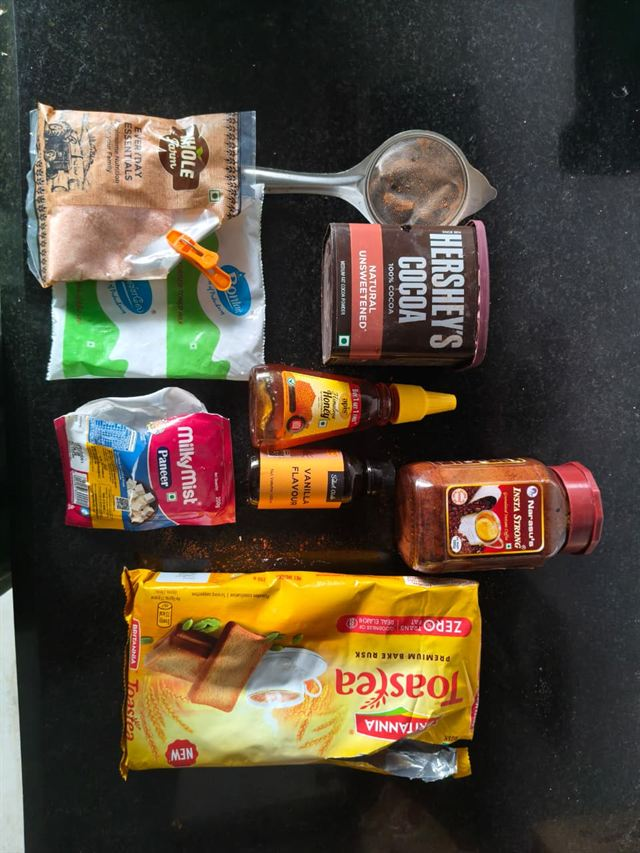
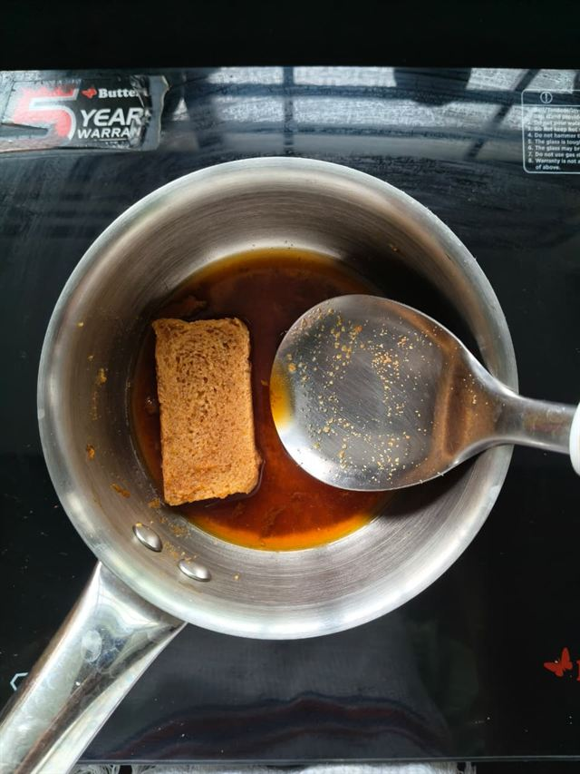
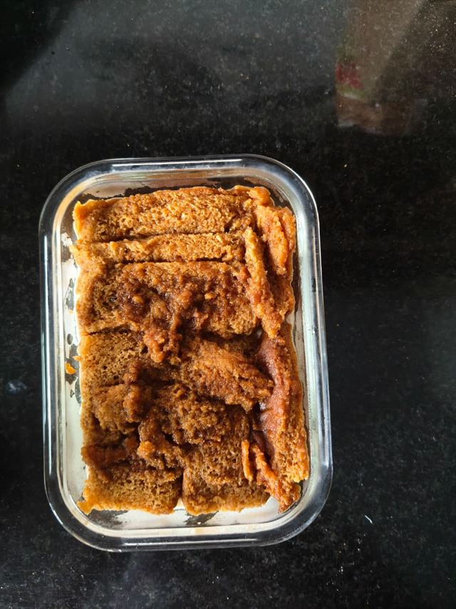
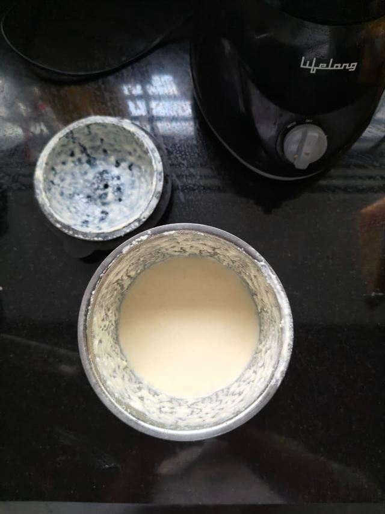
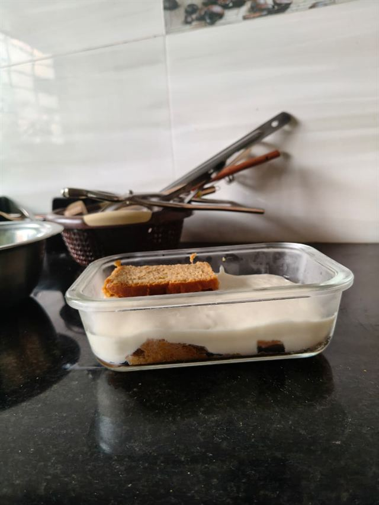
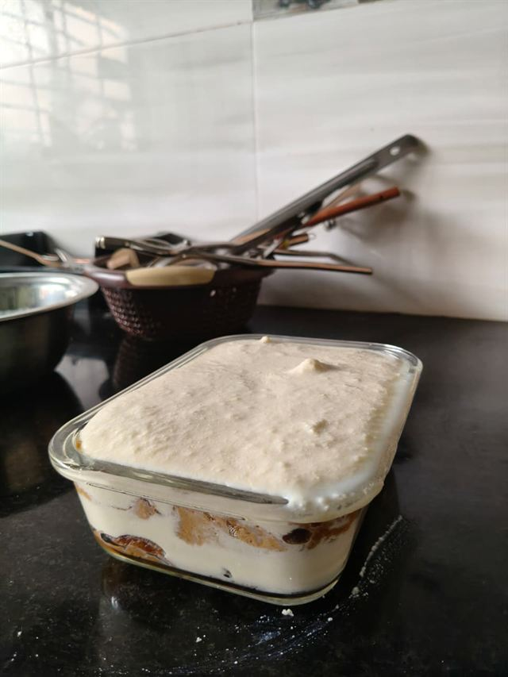

I did not set out to reinvent tiramisu. I set out to use up a slab of paneer before it turned, and a half-empty jar of instant coffee that had been sitting in the cupboard since the last time I meant to be productive at 11 p.m. Somewhere between those two facts, and a YouTube video I watched half-distractedly on a Sunday, this recipe happened.
The original used mascarpone, egg yolks, and ladyfingers — beautiful, and entirely outside what I had on hand. So I swapped in what most Indian kitchens already stock: paneer blended smooth in place of mascarpone, Britannia Toastea rusks standing in for ladyfingers, honey instead of refined sugar. It is not classical tiramisu. It does not pretend to be. But it has the same coffee-and-cream logic, the same reason tiramisu works in the first place — bitter against sweet, soft against soaked — and it happens to carry a great deal more protein than the version it borrows its name from.
This is less a recipe than a translation. Make it your own the same way.
The Recipe
Ingredients

- 200 g paneer, fresh
- ¼ cup (60 ml) toned or skimmed milk
- 2–3 tbsp honey, to taste
- ½ tsp vanilla essence
- A pinch of pink salt
- 1½ tsp instant coffee, dissolved in ⅓ cup (80 ml) hot water
- 6–8 Britannia Toastea rusks (or enough to line your dish in a single layer)
- 1–2 tbsp unsweetened cocoa powder, for dusting
Step by Step
-

1.Dissolve the instant coffee in hot water in a small saucepan. Warm gently until it forms a smooth, dark syrup, then let it cool slightly — too hot, and the rusks will fall apart the moment they touch it.
-

2.Dip each rusk into the syrup briefly — a few seconds per side is enough. Line the base of your dish with the soaked rusks, edge to edge, breaking pieces to fill gaps.
-

3.Blend the paneer, milk, honey, vanilla essence, and pink salt until completely smooth — no grain, no lumps. Stop and scrape down the sides once or twice if you need to.
-

4.Spoon the blended cream over the soaked rusk base and spread it evenly to the edges, covering the rusks completely.
-

5.Cover and refrigerate for at least 4–6 hours. Overnight is genuinely better — the flavours settle, and the rusk layer softens into something closer to cake than biscuit.
-
6.Just before serving, dust the top generously with unsweetened cocoa powder through a fine sieve, working close to the surface so the layer stays even.
Nutrition (Approximate)
Per serving, based on a 3-way split. This is an estimate — it will vary with your paneer and honey brands.
Tips
- Blend the paneer until it is genuinely silky — any graininess in the mixture will still be there on the spoon.
- Dip the rusks briefly, not fully submerged; a few seconds per side is plenty.
- Chill overnight if you can. This recipe rewards patience more than technique.
- Dust the cocoa just before serving, not before chilling — it will otherwise sink into the cream and lose its definition.
Variations
Higher-protein version: whisk a scoop of unflavoured or vanilla whey protein into the paneer mixture before blending, adjusting the milk slightly to keep the consistency smooth.
Vegan version: swap the paneer for well-drained, blended firm tofu or a cashew cream base, and use maple syrup in place of honey.
More authentic tiramisu version: use ladyfingers instead of rusks, fold in whipped cream for lightness, and add a tablespoon of coffee liqueur or dark rum to the syrup.
Lower-sugar version: reduce the honey to 1 tablespoon and rely on the natural sweetness of the paneer and milk; a few drops of stevia can round it out if needed.
Common Mistakes
- Over-soaking the rusks. They're more absorbent than ladyfingers — a quick dip is enough, and a long soak turns the base to paste.
- Under-blending the paneer. Any texture left in the cream will be noticeable in the final dish; blend longer than feels necessary.
- Skipping the chill time. This dessert needs time for the layers to settle into each other.
- Dusting the cocoa too early. It loses its crisp, dark top layer if it sits under refrigeration for hours before serving.
Storage
Store covered in the refrigerator for up to 3 days. Dust with fresh cocoa powder just before serving each time, rather than once at the start — it keeps the top looking freshly made. This recipe does not freeze well; the paneer cream separates on thawing.
A Personal Note
I think we put too much pressure on recipes to be exact — as though cooking were a formula to be solved rather than a conversation with whatever happens to be in the kitchen that day. This tiramisu exists because I was curious whether a mascarpone recipe would survive being translated into paneer and honey and rusks, and it turns out curiosity is most of what cooking actually requires. It didn't come out identical to the version I watched. It came out like something of my own instead. That seems like the better outcome. Recipes don't have to be perfect to be worth making — they just have to be worth repeating, and this one is.